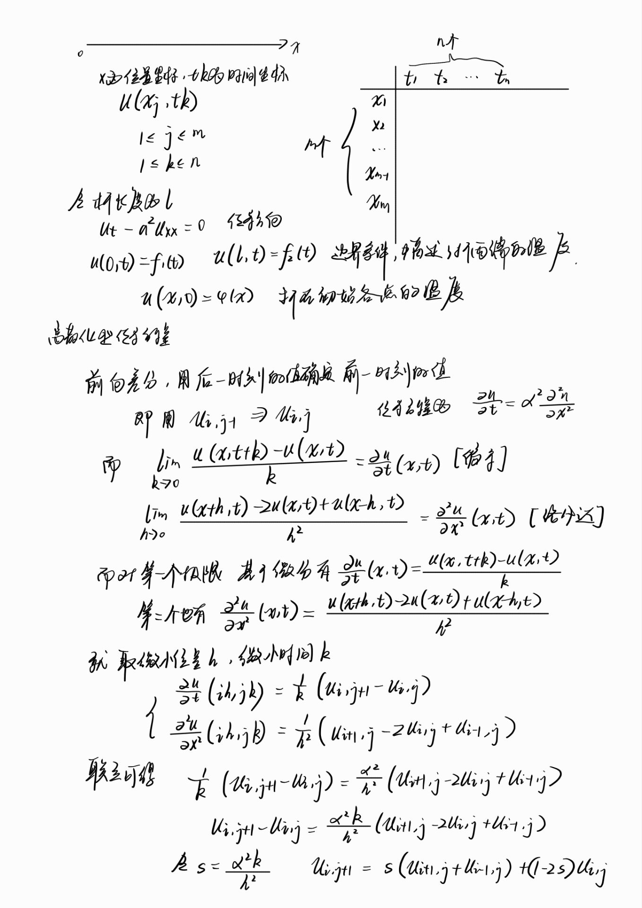
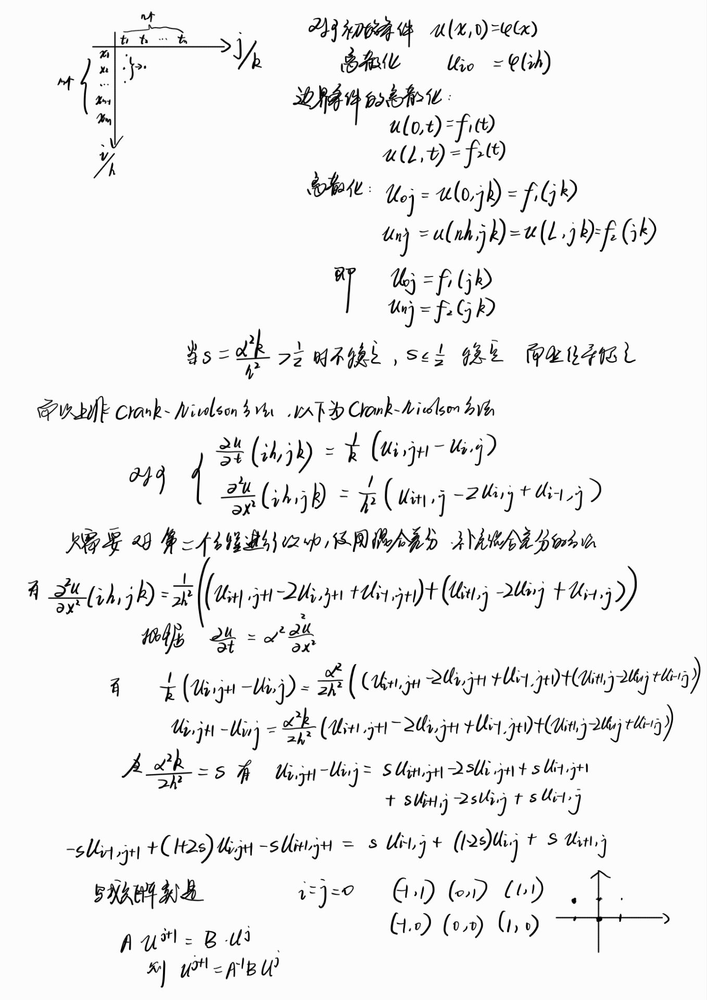
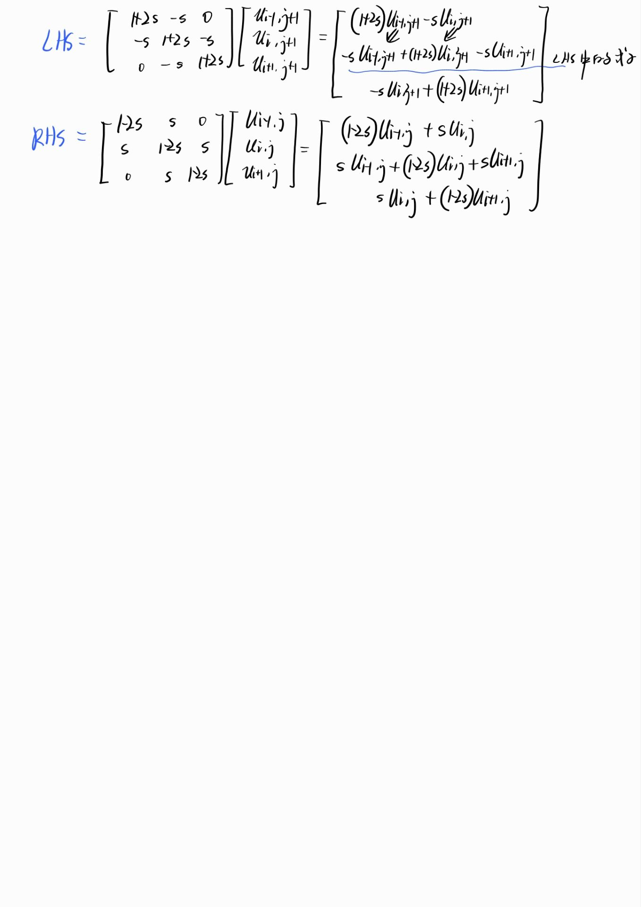

math-modeling
MATLAB
MATLAB的使用
最近在搞数学建模的事情
建模自然就要用到Matlab了，但是Matlab自带的IDE让我说不出话来，笨重不说，而且非常难看。
竟然有IDE默认主题是白色的，而且颜色还非常难调。我看了一下午的Matlab，眼睛非常难受。
这时，我才想起来，VsCode还有MATLAB的插件。于是装上插件，顿时轻松了不少。图片本来想放的，但是hexo的插入图片的机制实在太麻烦了，以后的文章就不放图了，就放文字和代码。
MATLAB的语法
语法非常简单，甚至比py还简单。甚至都不需要认真去学它的语法，照着相关文档写就行了，贴一段代码：
1 | |
1 | |
甚至还有和Py大差不差的缩进，而且定义函数都不需要声明返回值。可以说是非常简单易学了。虽然IDE不怎么样，我觉得官方甚至可以直接发布一个不带前端的版本好了。
热传导方程
可能存在错误，后续将会修正，有空会将其转为latex公式显示



math-modeling
https://silenzio111.github.io/2024/07/12/math-modeling/